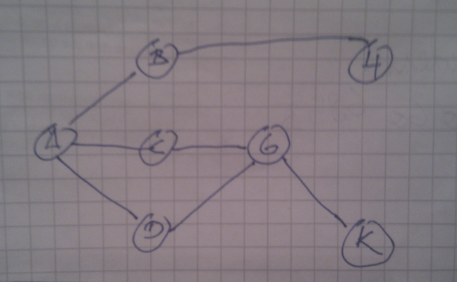
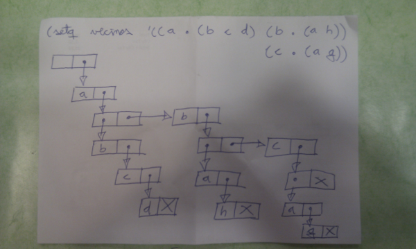

Búsquedas con Emacs Lisp
Índice
Hoy nos divertiremos aprendiendo a hacer búsquedas en emacs lisp, antes de nada veamos el grafo sobre el que estas se harán:

1 Estructura de Datos
Se puede ver la estructura de datos sobre la que se realizarán las búsquedas:
(setq vecinos '((a . (b c d)) (b . (a h)) (c . (a g)) (d . (g)) (g . (c d k)) (h . (b)) (g . (k))))
Podemos entender el nivel de punteros de este grafo mirando la figura 1:

Figura 2: Grafo sobre el que ejecutar las búsquedas
Para recuperar los vecinos de a se puede hacer de la siguiente manera:
(cdr (assoc 'a vecinos))
Se puede construir una macro para realizar esto de una manera más elegante:
(defmacro get.value (X vecinos) `(cdr (assoc ,X ,vecinos)))
Ahora podemos saber los vecinos de a de la siguiente manera:
(get.value 'a vecinos)
2 Función Extiende
El siguiente paso es crear una función extiende en la que dada una ruta proponga un nodo siguiente:
(defun extiende (trayectoria) (mapcar #'(lambda (nuevo-nodo) (append trayectoria (list nuevo-nodo))) (remove-if #'(lambda (vecino) (member vecino trayectoria)) (get.value (car (last trayectoria)) vecinos))))
Esta función primero invierte el orden de la lista trayectoria y después añade un nuevo nodo a la lista, siendo un nuevo nodo la lista resultado de vecinos que no son ya miembros de la lista trayectoria.
Si queremos extender el nodo a se puede hacer del siguiente modo teniendo b, c y d:
(extiende '(a))
3 Primero en Profundidad
Ahora podemos programar primero-en-profundidad
(defun primero-en-profundidad (inicial final) (primero-en-profundidad-aux inicial final (list (list inicial)))) (defun primero-en-profundidad-aux (inicial final abierta) (cond ((eq inicial final) (print (list inicial))) ((member (list inicial final) (extiende (list inicial))) (print (list inicial final))) ((member final (first abierta)) (print (first abierta))) (t (primero-en-profundidad-aux inicial final (append (extiende (first abierta)) (rest abierta)))) )) (primero-en-profundidad 'a 'a) (primero-en-profundidad 'a 'k)
Veamos cómo sería la traza de (primero-en-profundidad 'a 'k):
;; abierta: '(a) ;; (extiende '(a)) ;; abierta: '((a b) (a c) (a d)) ;; (extiende '(a b)) ;; abierta: '((a b h) (a c) (a d)) ;; (extiende '(a b h)) ;; abierta: '((a c) (a d)) ;; (extiende '(a c)) ;; abierta: '((a c g) (a d)) ;; (extiende '(a c g)) ;; abierta: '((a c g d) (a c g k) (a d)) ;; (print '(a c g k))
4 Primero en Anchura
Ahora vamos a pensar primero cómo sería la traza de (primero-en-anchura 'a 'k):
;; abierta: '(a) ;; (extiende '(a)) ;; abierta: '((a b) (a c) (a d)) ;; (extiende '(a b)) ;; (extiende '(a c)) ;; (extiende '(a d)) ;; abierta: '((a b h) (a c g) (a d g)) ;; (extiende '(a b h)) ;; abierta: '((a c g) (a d g)) ;; (extiende '(a c g)) ;; abierta: '((a c g d) (a c g k) (a d g)) ;; (print '(a c g k))
Ahora ya estamos en disposición de programar el algoritmo:
#+BEGINSRC lisp (defun end-path (x listoflist) (cond ((endp listoflist) nil) ((equal (last (first listoflist)) (list x)) (first listoflist)) (t (end-path x (rest listoflist)))))
;;(listp (end-path 'h '((a b h) (a c g) (a d g)))) ;;(listp nil) ;;(listp 'a)
(defun primero-en-anchura (inicial final) (primero-en-anchura-aux inicial final (list inicial)))
(defun primero-en-anchura-aux (inicial final abierta) (cond ((eq inicial final) (print (list inicial))) ((and (= 1 (length abierta)) (member (list inicial final) (extiende (list inicial)))) (print (list inicial final))) ((and (= 1 (length abierta)) (not (member (list inicial final) (extiende (list inicial))))) (primero-en-anchura-aux inicial final (extiende abierta))) ((> 1 (length (end-path final abierta))) (end-path final abierta)) ;; ((eq abierta nil) ;; nil) (t (primero-en-anchura-aux inicial final (mapcar #'(lambda (x) (first (extiende x))) abierta)))))
(primero-en-anchura 'a 'h)
5 Búsqueda binaria
Si tenemos una lista ordenada podemos probar a hacer búsquedas binarias, por ejemplo,
(setq ordenada '(11 22 30 33 40 44 55 60 66 77 80 87 90))
Con esta lista podríamos implementar nuestra búsqueda de la siguiente manera:
(defun binaria (x lista) "return if x is member of the sorted list" (let* ((max (length lista)) (pos (/ max 2)) (elem (elt lista pos))) (cond ((and (= max 1) (not (= x elem))) nil) ((= x elem) t) ((> x elem) (binaria x (nthcdr pos lista))) ((< x elem) (binaria x (butlast lista pos))) ))) (binaria '40 ordenada)
6 Agradecimientos
Gracias a #emacs-es por los ánimos.
7 Bibliografía
Algunas fuentes que me han servido para realizar este artículo son:
- Chassell, R. J. (2009) "An Introduction to Programming in Emacs Lisp". GNU Press.
- S. F. Galán, J. G. Boticario, and J. Mira (1998) "Solved Exercises of Applied Artificial Intelligence: Search and Representation" (In Spanish). Addison-Wesley, 1998, Madrid, Spain
8 Licencia
Este documento está bajo una Licencia Creative Commons Reconocimiento Unported 3.0